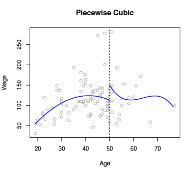
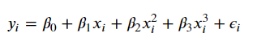
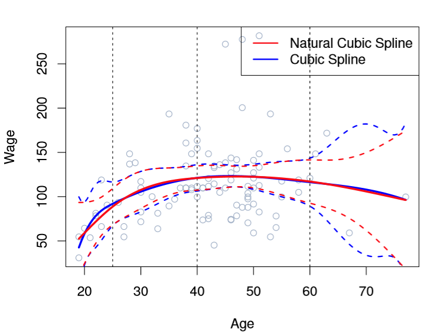
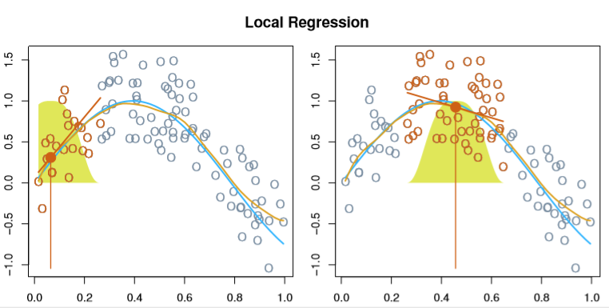
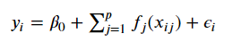

Splines and Generalized Additive Models
from IPython.display import ImageGeneral Form
Chapter 7 of ISL describes increasing our model complexity beyond simple, linear regression. We can add some complexity to our fit if we design our fit scheme to consider polynomial fits or step functions.
Generically though, we can express our linear form as
$y_i = \beta_0 + \beta_1 b_1(x_i) + \beta_2 b_2(x_i) + \beta_3 b_3(x_i) + … + \beta_K b_K(x_i) + \epsilon_i$
Where all of these beta terms are some fixed, arbitrary functions. Each term can be anything– polynomial, step, whatever.
Expanding
Piecewise Polynomial
Taking it a step further, they discuss a blend of the two called piecewise polynomials, which are defined by “knots”– the points where we split our polynomial regression. For example, if we wanted to construct two degree-3 polynomials with a knot at the point c, we’d have
Image('images/piecewise_1.PNG')
when x is less than c, and
Image('images/piecewise_2.PNG')
otherwise. By design, all of the beta coefficients differ between the two equations, and which equation we use depends on where our x value falls relative to c.
This leads us to a model that might look like this
Image('images/fig_7_3_topleft.PNG')
From a Degrees of Freedom perspective, we end up having to sum the degrees of freedom for the two equations to find our Degrees of Freedom for our predictor. Here, we have a total of 8.
Obviously, this leads to an erratic-looking prediction curve. We correct this by introducing constraints on continuity. Refitting might yield something like
Image('images/fig_7_3_topright.PNG')
If we further constrained that our prediction curve must look smooth, we’d have
Image('images/fig_7_3_bottomleft.PNG')
But how do we actually do that?
Spline Functions
Turns out we basically just rewrite the basis model
Image('images/basis.PNG')
But then “add one truncated power basis function, h(x, xi), per knot”, which is defined as
$h(x, \xi) = (x - \xi)^3_+$
which takes on its value where x > xi, or 0 otherwise (similar to our ReLU activation function, employed in Deep Learning contexts)
Introducing one of these h(x, xi) terms for every knot gives us the convenient property of continuous first and second derivatives everywhere except the point x = xi, which is why we only consider values greater than xi, the knots
To tie it all together, if we wanted to write a cubic polynomial with 3 knots, we’d have
Image('images/basis_w_splines.PNG')
which has 7 degrees of freedom. Compare this to the stepwise/polynomial approach which would have had 16!
Boundary Constraints
It’s worth also mentioning that in practice, we also often add “boundary constraints” to enforce smoothness at the extremes.
If you look at the chart below, you can see that the error bands of Cubic Spline as-is have wonky behavior on the far left and right of the function.
Image('images/fig_7_4.PNG')
So in addition to our h(x, xi) continuity constraints, we also require that X has a linear first derivative for values greater than the greatest knot and smaller than the smallest. This winds up meaning fewer effective degrees of freedom and thus smoother end-behavior.
For less hand-waving over the mechanics of actually making that happen, we basically follow this problem-solving form with the added derivative constrants on the ends.
Knot Selection
Of course, this leads us to two hyperparameters to consider, both of which having straight-foward solutions.
Where should the knots go?
- ISL advocates for just selecting the desired Degrees of Freedom (and by extension, the number of knots) and letting Computers™ figure it out. This typically yields knots spread evenly over percentiles.
How many knots should we use?
- Like many similar questions of this nature, ISL punts to investigation via Cross Validation
Vs High-Degree Polynomial
We could have effectively fit the data above using a complicated polynomial (the book uses Degree 15) like so
Image('images/fig_7_7.PNG')
But the real value of using Splines is clear as day when you consider the points on the extremes.
Think about it– if your fringe data yields bigger error than points closer to the means (where Splines evidently predict pretty well), would you rather have your data cubed, or to the power of 15?
By fixing our degree to cubic and utilizing knots to localize fits in trouble areas, we enjoy the flexibility of high-degree polynomials, but control for some of the prediction error messiness that they introduce.
Smoothing Splines
If you squint, the last section was basically “use knots to increase the expressiveness of polynomial functions, but make sure they’re smooth.” Expanding on this last part, suppose we had a magic, perfectly-accurate function g(x), whose loss function would be the familiar
$RSS = \sum_{i=1}^n (y_i - g(x_i))^2$
If we fit this perfect g(x), our RSS would be zero, but plotting the predictions would be this erratic, spikey mess of hitting every point perfectly– obviously doomed to overfit.
Thus (like Lasso and Ridge regression) we can layer in a penalizing term that leverages a tuning parameter lambda like so
$\sum_{i=1}^n (y_i - g(x_i))^2 + \lambda \int g”(t)^2 dt$
where the last term, the second derivative, is basically a “measure of roughness” and is large when g(t) is wiggly near a point t.
Considering the values lambda can take on, we have two extremes:
lambda = 0: This gives us our original jumpy linelambdais huge: This pushesg'(x)to zero and basically gives us a straight line.
Surprisingly, due to Math™, this magical g(x) function that minimizes our new loss function is actually a natural cubic spline with knots at each value of X, x1, x2, ..., xn.
Effective Degrees of Freedom
Looking at this, two things jumped out at me. n knot terms means n additional h(x, xi) terms in our y which is:
- Probably computationally expensive to fit
- An inordinately high Degree of Freedom
Apparently, this lambda term is so poweful that it crimps the roughness of these splines, and thereby the Effective Degrees of Freedom. Additionally, due to some very elegant/convenient Math™, because we’re using all terms x1, x2, ..., xn in our calculation, we can basically forego calculating each term of Leave-One-Out Cross Validation and instead use the following (snipped from these slides)
Image('images/rss_cv.PNG')
Few notes:
- We used
g, they usedf - The
^(-i)“exponent” the top means the fitted value ofxion a spline fit on every value exceptxi - ISL states (for which there is a formula) for their construction of
Sand so will we.
Local Regression
Moving along, Local Regression basically adapts the idea of KNN to the regression setting.
Essentially, we fit a separate model for each new x0 by:
- Choosing a span parameter,
s, representing the proportion of training points nearestx0 - Weight each of our points selected by
srelative to their distance fromx0(the bell curves below) - Pick your regression scheme (they did linear) and fit your
B0andB1unique to thisx0
Image('images/fig_7_6.PNG')
Like KNN, the real trick is in selecting the sizing parameter, s– if it’s too large, the model will be flatter and more biased, too small and we’ll see too much variance.
Additionally, this approach falls apart for high-dimensional data as the “closest neighbor points” becomes less and less practical to leverage.
GAMs
Finally, we can further-genericize our formulation of the Basis Model
$y_i = \beta_0 + \beta_1 b_1(x_i) + \beta_2 b_2(x_i) + \beta_3 b_3(x_i) + … + \beta_K b_K(x_i) + \epsilon_i$
to
Image('images/gam_formula.PNG')
or
Image('images/gam_formula_reduced.PNG')
thus implicitly stripping out the beta terms with a series of smooth functions f_j, unique to each feature.
As far as training goes, GAMs often employ a method called backfitting that looks like
Image('images/backfitting.PNG')
Finally, the additive part of GAM allows us to examine the effects of our particular X_j term on Y for inference purposes, like so
Image('images/fig_7_12.PNG')